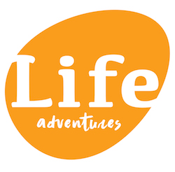

Overview
Purpose
The purpose of the life Adventures Whitewater Rafting siteplan is to build revenue and ways to create a healthy lifestyle between family and friends by enjoying nature at its finest. Enjoy a exciting experience on river rafting and while you are doing that,enjoy mother nature. The Perfect way to bond with friends and inspire team building. We want to prove to all that you are never to young to have fun and excitement.
Audience
Our target audience will be those from the age of twelve to 75, who loves river rafting , mountain adventures, running and cycling Many activities are avaliable to chose from.Should they need any advise on any of these activies, we will gladly consult them.
Branding
Website Logo
Style Guide
Color Palette
Palette URL:
https://coolors.co/091136-fb0f07-70e000-fdfcdc| 091136 | fb0f07 | 70e000 | fdfcdc |
|---|---|---|---|
| [#091136] | [#fb0f07] | [#70e000] | [#fdfcdc] |
Typography
Heading Font: Courgette
Paragraph Font: Roboto Serif
Normal paragraph example
The best Whitewater Rafting in Colorado, White Water Rafting Company offers rafting on the Colorado and Roaring Fork Rivers in Glenwood Springs. Since 1974, we have been family owned and operated, rafting the Shoshone section of Glenwood Canyon and beyond.
Colored paragraph example
Trips vary from mild and great for families, to trips exclusively for physically fit and experienced rafters. No matter what type of river adventures you are seeking, White Water Rafting Company can make it happen for you.
Navigation
Site Map
Salmon River Idaho
Website logo
Main Fork of the Salmon River, Idaho
Nestled deep in the Frank Church Wilderness of No Return winds the Salmon river. The Salmon was given the nickname long ago as the River of No Return by the people living near it because of the number of folks that came to visit and fell so in love with the rugged beauty of the river that they never left.

Herds of elk and deer graze on the hillsides around the river and bear and bighorn sheep are also commonly sighted. The river corridor is also lined with awe inspiring ponderosa pine which tower over the sandy beaches in the campsites and provide shelter from sun or rain when needed.

Let's not forget the rapids! They range from class I-IV. The Salmon is one of the longest undammed rivers in the United States. As a free flowing river the water is higher, faster, and colder in the early summer and lower, slower, and warmer in the late summer. There are good rapids all summer...but families with children who like to swim tend to appreciate the late summer's slower, warmer water more.
Navigation Part2
Home